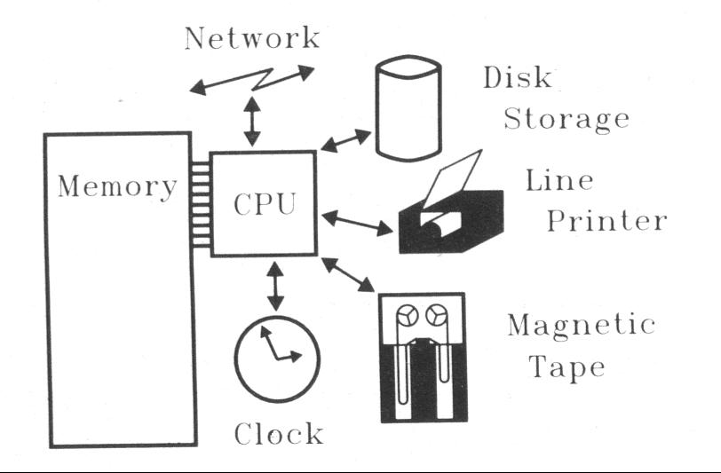
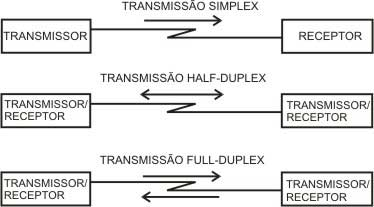

Sistema Operacional de Redes
É um conjunto de módulos que ampliam os sistemas operacionais, complementando-os com um conjunto de funções básicas, e de uso geral, que tornam transparente o uso de recursos compartilhados da rede.
Sistema Operacional de Redes

Modelo de referência OSI
(Open System Interconnection)
- É considerado o primeiro modelo arquitetural de comunicação inter-computadores.
- Descreve como as informações ou dados trafegam através da rede e como os programadores podem acessar aplicativos que estão localizado em outra rede.
- Divide o problema de mover informações entre computadores em um meio de rede em 7 problemas menores e gerenciáveis. Essa separação em funções menores e gerenciáveis é conhecida como camadas.
Objetivo da OSI
O Modelo de referência OSI, tem como objetivo ser um modelo padrão (ou modelo de Referência) para protocolos de comunicação entre diversos tipos de sistema de redes, garantindo a comunicação end-to-end.
Criação da OSI
O Modelo OSI foi criado em 1971 e formalizado em 1983 e lançado em 1984 pela ISO 7498.
O Modelo de referência OSI
Se divide em 7 camadas, de forma a se obter camadas de abstração. Cada protocolo implementa uma funcionalidade assinalada a uma determinada camada.
O Modelo de referência OSI
Segundo Tanenbaum o Modelo OSI não é uma arquitetura de redes, pois não especifica os serviços e protocolos exatos que devem ser usados em cada camada. Ele apenas informa o que cada camada deve fazer.
O Modelo de referência OSI
Serve basicamente para realizar a comunicação entre maquinas diferentes e como essas maquinas vão se comunicar. Isso, independentemente de tecnologia e distancia, podendo ser executadas em redes curtas, médias e de longas distâncias.
O Modelo de referência OSI
Este modelo exige o cumprimento de etapas para atingir a compatibilidade, portabilidade, interoperabilidade e escalabilidade.
O Modelo de referência OSI - ETAPA 1
A definição do modelo, que define o que a camada realmente deve fazer.
O Modelo de referência OSI - ETAPA 2
Definição dos protocolos de camada, define os componentes que fazem parte do modelo.
O Modelo de referência OSI - ETAPA 3
Seleção de perfis funcionais, realizada pelos órgãos de padronização de cada país.
O Modelo de referência OSI
É composto por 7 camadas, sendo que cada uma delas realizam determinadas funções especificas por camada.
Camada 7
Aplicação (Application).
Camada 6
Apresentação (Presentation).
Camada 5
Sessão (Session).
Camada 4
Transporte (Transport).
Camada 2
Dados (Data Link).
Camada 1
Física (Physical).
OSI: Um modelo de rede em camadas
Como é um modelo de camadas, temos algumas vantagens.
Vantagem 1
O processo de quebrar as funções ou tarefas de rede em camadas, reduz a complexidade.
Vantagem 2
Cada camada fornece um serviço para a camada acima dela na especificação do protocolo.
Vantagem 3
Cada camada se comunica com o software ou hardware da mesma camada em outros computadores.
Vantagem 4
As 4 camadas mais baixas (Transporte (4), rede (3), link de dados (2) e física (1)) estão "preocupadas" com o fluxo de dados de ponta a ponta através da rede.
Vantagem 5
As 4 camadas mais altas (Aplicação (7), Apresentação (6) e Sessão (5)), estão mais orientados para o servir as aplicações.
Vantagem 6
Os dados são encapsulados com a informação de protocolo necessário. Isso acontece à medida que esses dados descem as camadas antes de trânsito de dados.
Descrevendo as camadas (Resumo)
Aplicação (7), Apresentação (6), Sessão (5), Transporte (4), rede (3), link de dados (2) e física (1).
Aplicação (Application)
- A camada de aplicação interage com os programas de aplicação e essa camada é o mais alto nível de modelo OSI
- A camada de aplicação contém funções de gerenciamento para suportar aplicativos distribuídos.
- Exemplos de camada de aplicação são aplicativos como transferência de arquivos, correio eletrônico, login remoto, etc.
Apresentação (Presentation)
- A camada de apresentação define o formato no qual os dados devem ser trocados entre as duas entidades comunicantes.
- Também lida com compressão de dados e criptografia de dados (criptografia).
Sessão (Session)
- A camada de sessão fornece mecanismos para controlar o diálogo entre os dois sistemas finais. Ele define como iniciar, controlar e finalizar conversas (chamadas sessões entre aplicativos)
- Este pedido de camadas para uma conexão lógica deve ser estabelecido em um pedido de usuários finais
- Qualquer logon necessário ou validação de senha também é tratada por esta camada.
Sessão (Session)
- A camada de sessão também é responsável por encerrar a conexão.
- Esta camada fornece serviços como disciplina de diálogo que pode ser full duplex ou half duplex.
- A camada de sessão também pode fornecer mecanismo de seleção, de modo que se uma falha de algum tipo ocorra entre os pontos de controle, todos os dados podem ser transmitidos a partir do último ponto de controle.
Transporte (Transport)
- O objetivo desta camada é fornecer um mecanismo confiável para a troca de dados entre dois processos em diferentes computadores.
- Garante que as unidades de dados sejam entregues sem erros
- Garante que as unidades de dados sejam entregues em sequência
Transporte (Transport)
- Garante que não há perda ou duplicação de unidades de dados
- Fornece serviço de conexão ou conexão orientada
- Fornece o gerenciamento de conexão
- Conexão múltipla em um único canal
Rede (Network)
- Implementos de roteamento de quadros (pacotes) através da rede.
- Define o caminho ideal que o pacote deve levar da origem para o destino.
- Define o endereçamento lógico para que qualquer ponto final possa ser identificado.
Rede (Network)
- Manipula o congestionamento na rede.
- Facilita a interconexão entre redes heterogêneas (Internetworking)
- A camada de rede também define como fragmentar um pacote em pacotes menores para acomodar diferentes mídias.
Dados (Data Link)
- A camada de ligação de dados fornece uma comunicação confiável sobre a interface de camada física.
- Quebra os dados de saída em quadros e remonta os quadros recebidos.
- Crie e detecte limites de quadros.
- Manipular erros ao implementar um esquema de reconhecimento e retransmissão.
Dados (Data Link)
- Implementar controle de fluxo.
- Suporta comunicação ponto-a-ponto e comunicação de transmissão.
- Suporta comunicação simplex, half-duplex ou full-duplex.
Física (Physical)
- Fornece interface física para transmissão de informações.
- Define regras pelas quais os bits são passados de um sistema para outro em um meio de comunicação física.
Física (Physical)
- Abrange todos os aspectos mecânicos, elétricos, funcionais e processuais para a comunicação física)
- Tais características como os níveis de tensão, o tempo de mudanças de tensão, as taxas de dados físicos, as distâncias máximas de transmissão, os conectores físicos e outros atributos semelhantes são definidos pelas especificações da camada física.
Comunicação (Simplex, Half-Duplex e Full-Duplex)

Simplex
As transmissões podem ser feitas apenas num só sentido, de um dispositivo emissor para um ou mais dispositivos receptores; é o que se passa, por exemplo, numa emissão de rádio ou televisão; em redes de computadores, normalmente, as transmissões não
são desse tipo.
Half-Duplex
Uma transmissão pode ser feita nos dois sentidos, mas alternadamente, isto é, ora num sentido ora no outro, e não nos dois sentidos ao mesmo tempo; este tipo de transmissão é bem exemplificado pelas comunicações entre computadores (quando um transmite
o outro escuta e reciprocamente); ocorre em muitas situações na comunicação entre computadores.
Full-Duplex
As transmissões podem ser feitas nos dois sentidos em simultâneo, ou seja, um dispositivo pode transmitir informação ao mesmo tempo que pode também recebe-la; um exemplo típico destas transmissões são as comunicações telefónicas; também são possíveis
entre computadores, desde que o meio de transmissão utilizado contenha pelo menos dois canais, um para cada sentido do fluxo dos dados.
Comunicação entre camadas
- Uma mensagem começa na camada de aplicação superior e move-se para camada de baixo da OSI até chegar na camada física (TOP-Botton).
- À medida que a mensagem desce, cada camada do modelo OSI sucessiva adiciona um cabeçalho a essa mensagem sucessivamente.
- Um cabeçalho é uma informação específica da camada que basicamente explica o que funciona na camada executada.
- Por outro lado, na extremidade de recepção, os cabeçalhos são listrados a partir da mensagem à medida que viaja as camadas correspondentes.
Modelo OSI
Este conceito de modelo baseado em sete camadas foi fornecido por Charles Bachman em um de seus trabalhos. A evolução do projeto OSI começou a partir de experiência com a ARPANET, a Internet incipiente, a NPLNET, o EIN, o CYCLADES e também com o trabalho
em IFIP WG6.1. A partir daí, com base neste modelo, um sistema de rede passou a ser dividido em camadas. Dentro de cada uma delas, uma ou mais entidades se encarregavam de implementar sua funcionalidade.
Modelo OSI - Nos dias atuais
Atualmente, a ISO trabalha em parceria com outra organização, a União Internacional de Telecomunicações (em inglês International Telecommunications Union), publicando diversas especificações de protocolos que tem como base a arquitetura OSI.
Referências:
[Tanenbaum 2003]
Tanenbaum, Andrew S. - Redes de Computadores - Rio de Janeiro : Campus, 2003.
Vandenberg D. Souza - tradução de Computer Networks, 4th ed.
ISBN 85-352-1185-3